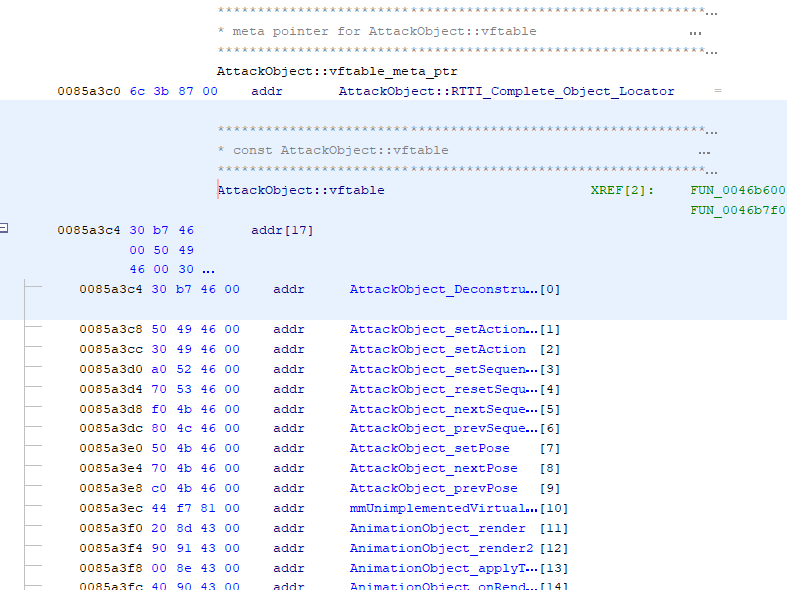

vtables
A vtable (or vftable, for virtual functions table) is how most C++ implementations do polymorphism.
class ParentClass
{
public virtual void virtualFunction()
{
// Parent Implementation
}
public virtual void pureVirtualFunction() = 0;
}
class ChildClass : ParentClass
{
public override void virtualFunction()
{
// Child Implementation, overriding's Parent Implementation
}
}
Each class derived from a base class have their own table of function pointers containing all virtual methods they implemented from the base class.
When one calls a virtual method, we look up the object's vtable and call the appropriate derived class method.
What is a vtable in C++ (StackOverflow)
| ParentClass | ChildClass | |
|---|---|---|
| addr_vtable+0x0 | *destructor() | *destructor() |
| addr_vtable+0x4 | *virtualFunction() | *virtualFunction() |
| addr_vtable+0x8 | *pureVirtualFunction() |
The offset of the functions may vary, ParentClass' and ChildClass' virtualFunction() pointers are not necessarily both at addr_vtable+0x4.
ParentClass vtable's pointers to destructor() and virtualFunction() are different from the ones in ChildClass' vtable.

Even if we call it a table, a vtable is a list of function pointers, hence why the addresses of each function is incremented by 0x4.
Since all child classes inherit the virtual functions, the destructor is always the first function to be so.
Constructors are not in the vtable however, as they cannot be virtual.
Note: when a class is created, even if the destructor is not explicitly defined, the compiler generates a default destructor. Therefore all inheriting classes will inherit this destructor. Still, it is pretty unsafe to not have a virtual destructor when having children classes, because of potential unproper cleanups.
Here, most of the guesswork has already been done, but the functions here are natively named FUN_<ADDRESS>.
When the decompiled code refers to a function in the vtable, it may appear as object + 0x<Offset>.